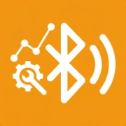
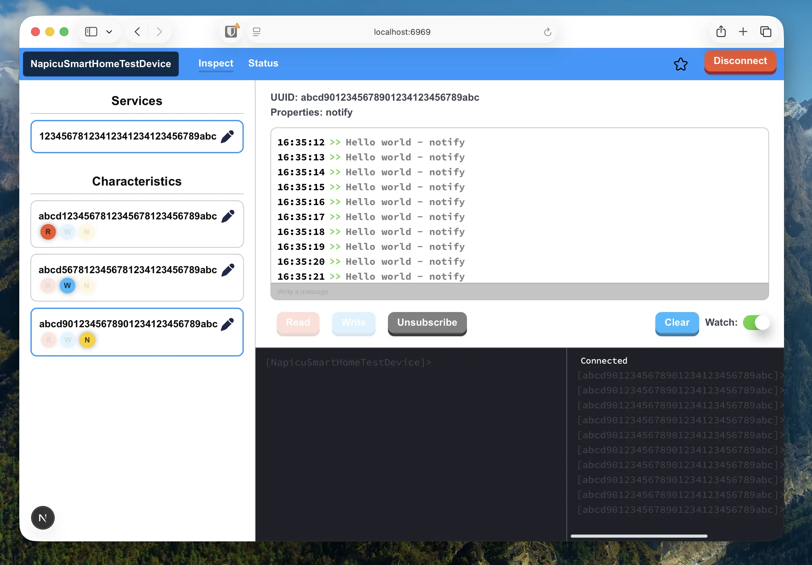

NapicuBLEHubProfessional tool for developers to debug and test Bluetooth devices. Intuitive web interface with terminal command support.
Read and write data to BLE devices, subscribe to notifications in real-time.
Intuitive web interface for simple interaction with BLE devices without CLI.
Advanced commands for users who prefer command-line interface.
Connected BLE device is mirrored on all web clients across the network.
Access from any device on the network at the host's IP address.
Easy deployment in containers with support for Linux, macOS, and Windows.
macOS 26.5
✓ Tested
Fedora 44
✓ Tested
Debian 13
✓ Recommended
Windows 11
✓ Tested

Modern React framework for fast performance
Type-safe JavaScript for better code quality
BLE library for Node.js
Containerization for easy deployment